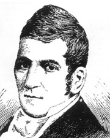
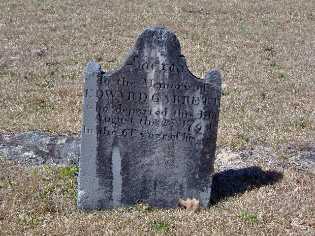
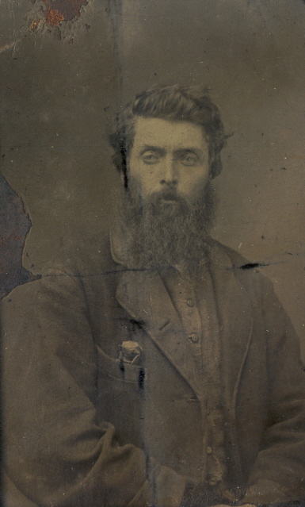
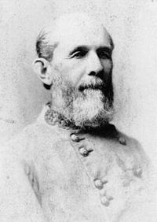
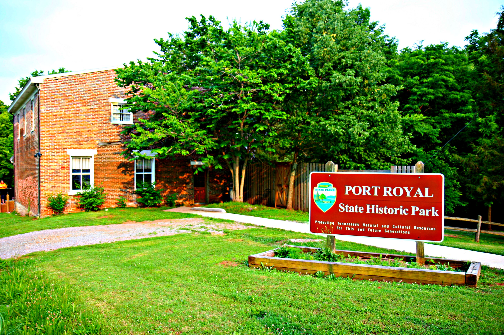
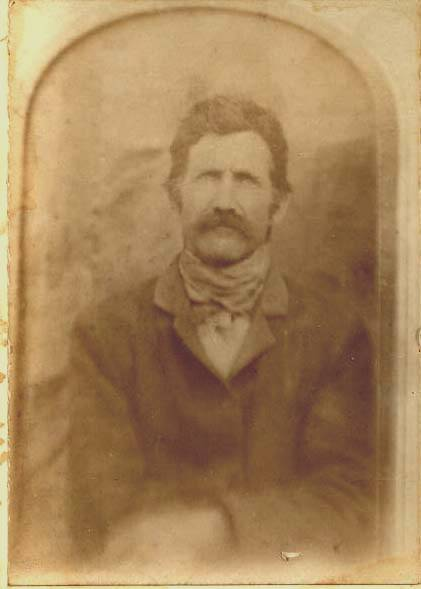
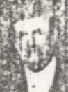
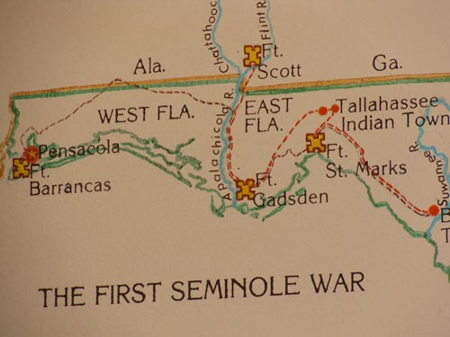

PHOTO ALBUM, GARRETT LINE

Nicholas Ware
The first reliable documentation of the Garrett ancestors in America is 1665 Virginia Land Patent on
Mataponi River of ancestor John GARRETT and his ?brother-in-law Nicholas Ware. Picture is of original Nicholas Ware
descendant Nicholas Ware (b. VA 1776 d. 1824), Planter and US Senator from Georgia and Mayor of Augusta Georgia.

Sheriff Pat Garrett, New Mexico Territory
1850-1908. Maternal cousin, raised on a plantation Claiborne Parish Louisiana (34 slaves 1860).

Edward GARRETT (b. ?Loudoun Co VA 1733 d. Laurens Co SC 1794)
Of Warrior Creek N Laurens Co SC, married Ann Owsley (1744-1823, gdau of Major Thomas OWSLEY https://www.geni.com/people/Maj-Thomas-Owsley/6000000001347518524). Progenitor of GARRETT clan in N Laurens Co SC, and by DNA test 2020 maternal 6th g grandfather. Also DNA confirmation of descent from
his son Nicholas Ware GARRETT (1765-1846, 11 slaves 1840 Laurens Co SC) and his son 4th g grandfather Nicholas GARRETT (1799-1867, m. Ellen RHODES, 1 slave 1860 Henderson Co TN) of Middlefork TN.

Elijah T. Garrett of Middlefork, Tennessee
Younger brother of maternal 3rd great grandfather James ?LW GARRETT (ca 1823-55). Born 1832 South Carolina upcountry, d. 1882 west TN.

Hosea Garrett Sr.
Maternal cousin, 1st cousin of 4th great grandfather Nicholas Garrett (b. SC 1799) of Middlefork TN.
Born 1800 north Laurens Co (epicenter of the Garretts in SC) SC, d. Chapel Hill TX.
A founder of Baylor University and wealthy Planter (20 slaves 1860 Washington Co TX). His brother Isaac GARRETT (1808-1867), 11 slaves 1860 near Rico (Chattahoochee Hills)
Georgia SW of Atlanta. "GARRETT's Ferry" on Chattahoochee River... Son of Isaac, Corporal Lemuel GARRETT (b. 1827) of Co E 35th GA Inf CSA from Aug 1861, died of disease Nov 1864 in Savannah after being
transferred for exchange Oct 1864 from Elmira, NY Yankee prison. Captured May 6 1864 Smith Ford on Rapidan, Battle of Wilderness. Prisoner at Point Lookout MD. Had
"several sons [who] were lawyers", 1 son Dr Alexander Stephens GARRETT (May 1861-1938) Weatherford TX... Battles of 35th GA CSA - Seven Pines May 31 1862,
Seven Days Battles June 1862 (Mechanicsville, Gaines Mill, Malvern Hill...),
2nd Manassas Aug 1862, Fredericksburg Dec 1862, Chancellorsville May 1863, Gettysburg July 1863, Wilderness May 1864... Brothers of Lemuel, Wm J &
Young GARRETT were merchants of Atlanta, lived Washington Street. Young m. June Candler Garrett (1844-1947), Atlanta's 1st romantic novelist, & great niece of Asa G.
Candler founder of Coca Cola Company & Atlanta mayor. Another brother, John Edward GARRETT (d. 1913 Marshall Co AL), served Co F 25th AL Inf CSA. Battles in TN &
GA...
Theory that prominent Georgia Candlers are descended from Lt Col Wm Candler (1608-1680) whose daughter Mary m. ancestor Capt. Zachariah MOORMAN:
https://www.geni.com/people/Lt-Col-William-Candler-of-Callan/6000000001233250064
https://politicalgraveyard.com/families/10232.html
Possible DNA match from ancestor Mary Candler Moorman to the Georgia Candlers?
Son of Hosea Sr, Hosea GARRETT Jr (1831-80) of Co G, 10th Texas CSA. Shot in chest Aug 1864 Atlanta Campaign Georgia...

General William Tatum Wofford CSA
Maternal cousin, General CSA of Georgia.
Descendant of 1 of the 5 WOFFORD brothers that moved to Spartanburg Co SC in colonial times.
6th great grandfather James WOFFORD, 1 of the brothers, fought in American Revolution
(in Roebuck's Battalion of Spartan Regiment of Militia (SC), present at Battles of Kings Mt and Cowpens).
Wofford descendants also founded Wofford College of Spartanburg, SC

Joe H. Ryals of Middlefork, TN ca 1930?
Confederate veteran, "so great was his love for the lost cause" was buried in his Confederate uniform (Co I 1st/27th Consolidated Reg, Tennessee Inf CSA). From Joe Ryals CSA accepted pension application 1905 - b. Dec
1847 joined 27th Inf summer 1861 Trenton TN, was at Battle of Stones River (Murfreesboro) TN Dec 1862, had 1865 parole papers, lived on "homeplace" at Middle Fork...
His brother W.N. Ryals married Catherine Susannah GARRETT,
sister of 3rd g grandfather James Nicholas GARRETT (ca 1823-1855). W.N. was also a Confederate soldier,
spent time with N.B. Forrest Cavalry, then "returned to former command" & was killed Battle of Resaca Georgia May 1864
with TN infantry. "He rode away from the Garrett place
[Middlefork] [July] 1863 never to return". His rifle, etched with "W.N. Ryals" is in the hands of a collector...
W.N. Ryals served with the 51st/52nd Consolidated TN Inf Regiment CSA from 1862, & about 10 months in 1863/64 with N.B. Forrest (21st Wilson's) TN Cav.
Possible battles with Forrest: Chickamauga Sept '63, Paducah March '64, Ft Pillow April '64... Brother John Micham Ryals served in Co H, 21st TN Cav CSA.
Other Confederate soldiers from this area were the 4 brothers of maternal 2nd g grandmother Sarah Eliz Thomas GARRETT (d. 1904 near Bowie TX, no kin to Nancy
Ann Thomas line). They served with the 27th
TN Inf CSA. ?3 were killed, 1 at Perryville & 1 at Murfreesboro + ? ... Some battles of 27th TN Inf CSA: Shiloh TN (April 1862), Munfordville KY (Sept 1862), Perryville KY (Oct 1862),
Murfreesboro TN (Jan 1863), Chickamauga GA (Sept 1863), Atlanta GA (July 1864). Their other sister Nancy Emmaline Thomas m. 1st Lt Leander RHODES (also GARRETT kin, d. 1922 Hood
Co TX) of 52nd Regiment TN Inf Confederate. Battles of 52nd TN CSA: Shiloh, Perryville, Murfreesboro, Chickamauga, Bentonville...
Brother of 3rd g grandfather James N. GARRETT, John Lafayette GARRETT (b. SC 1831 - d. near Arkadelphia AR 1874, wife d. Rockwall TX 1929), served in Co H, 37th AR Inf
Regiment Confederate (same battles as 11th MO CSA below).
Sarah Eliz GARRETT (1848-1887), sister of 2nd g grandfather John Harrison GARRETT, m. Joseph Parrish Walker (b.1836 Pittsylvania Co VA d.1908 Chester Co TN,
"HE WAS A CONFEDERATE SOLDIER" on tombstone)... Sister of Joseph Parrish Walker, Sophia Ann Walker Ryals (d. Montague Co TX 1940), m. Charles Henry Ryals (Co. I 27th TN Inf
CSA), brother of Joe Ryals.

Port Royal, Tennessee
Maternal great grandmother Florence WILCOX GARRETT (1877-1962 Montague Co TX) is the source of red hair in the family.
She was the daughter of Wilson Wilcox, Confederate veteran of 11th MO Inf CSA. They were descendants of Samuel WILCOX (1737-1811, 1787 Davidson Co TN, 1801 Montgomery Co TN tax list 4 slaves),
pioneer founder of Port Royal, Tennessee. 2020 test DNA Match (to sons John EARLE WILCOX & ancestor Charles B. Wilcox) confirmed to 5th g grandfather Samuel WILCOX... 1811 Samuel WILCOX Inventory of Estate Montgomery Co TN, 520 a. land, 21 Negroes...
Samuel WILCOX served in VA Militia (1761), Lord Dummore's War (1774) & American Revolution ?from (ca 1748) NE of Front Royal near mouth of Manasses Run &
Shenandoah River now Warren Co (old Frederick Co) VA. 12th/8th/4th VA
Regiments under command of Col James Wood & others in Revolution 1777-1782. His units saw action in the Battles of Brandywine, Germantown,
Monmouth & the Siege of Charleston... Samuel Wilcocks on Capt. James Wood's (later governor of VA) roll, paid at Romney
& Winchester for Dunmore's War 1774.
His ?brother John WILCOX Jr served in the the French & Indian War (ca 1756) from Frederick Co Va under command of Capt George Mercer
(also aide-de-camp to George Washington)... Sisters of Samuel Wilcox: Anne WILCOX (d. 1807 Stanford KY) m. Ensign Wm Warren - he served with 8th Reg of
VA, 1776-1778. Ca 1785 commanded fort on frontier of Jefferson Co, KY (?William Warren's Station, now Boyle Co "[N]E of Junction City on
headwaters of Balls Branch", Dix River = Warrenwood Manor on
highway 127); 12 blacks 1800; gsons of Ensign Wm Warren, John Fouche Warren (22 slaves 1860) & SAMUEL WILCOX Warren, built Warren Manor
1856). Lettice WILCOX (d. 1800 Danville KY) m. John Reed
("a handsome, educated & well traveled gentleman", parents of Thomas Buck Reed 1787-1829 U.S. Senator from MS) who est. 1779 Reed's Station ?2 m. SSE of old Danville KY. July 1794 Huston's Battalion Kentucky Mounted Rifles (August Battle of Fallen Timbers?).

Robert Coleman Bone (b.1846 Carroll Co MO d. 1924 Benton Co AR)
1880 Census, farmer near Richmond, Ray Co Missouri. Step brother of 2nd g grandfather Wilson W. WILCOX (b. 1838 Stewart Co TN, 1850 Livingston
(Oct) then Carroll (Nov) Co MO, 1860 Lawrence Co MO, 1867 Claiborne Parish LA, 1870 Whitesboro Grayson Co TX, d. 1884 near Bowie
Texas). He served in Company F 11th Missouri Inf Confederate with Wilson WILCOX, Wilson's father Charles C.P. WILCOX (ca 1810-1862?), Wilson's bro-in-law 1st Sgt Job M. Ross
(b. 1833 Levasy Jackson Co MO, m. 1860 Jaqueline WILCOX (1842-1919) Lawrence Co MO, 1870 Ray Co MO, 1880 Jack Co TX, d. Madisonville Texas 1917) & his brother Reverend David Bone
(b. 1843 Carrollton MO - 1944, 1880 Minister St Joseph Missouri, 1910 Kearney MO, 1930 "Methodist South", buried Richmond Missouri;
click for Reverend David Bone). Some battles of 11th MO CSA: Prairie Grove AR (Dec 7 1862), Helena AR (July 4 1863),
Pleasant Hill LA (April 9 1864) & Jenkins Ferry AR (April 30 1864)... Commander Company F 11th MO CSA: Capt David Crockett Howard (b. 1838 MO, 1850 Bentonville AR,
1860 Mt Vernon, Lawrence Co MO (father was merchant), post war El Dorado Union Co AR, d. 1917.)... Co F 11th MO CSA with Gen Kirby Smith surrendered as prisoners
New Orleans May 1865, paroled Shreveport June 1865. Wilson WILCOX residence Claiborne Parish LA...
In 1832 Am Rev Pension app, maternal gfather of Charles C.P. WILCOX, Lt Thomas FRENCH (1753-1848, 21 slaves 1830 Stewart Co TN), gave President Andrew Jackson as personal reference. Says he was in KY in 1780
& middle TN 1781.

John Harrison GARRETT 1903 (b.1850 Middlefork, Henderson Co Tennessee d. 1925 Bowie, Montague Co Texas)
Maternal 2nd great grandfather.

Charles B. Wilcox (b. ca 1775 near Front Royal, Old Frederick County Virginia d. Aft. 1840 Stewart County Tennessee)
Maternal 4th great grandfather, WILCOX DNA MATCH. He participated spring of 1818 in the 1st Seminole Indian War, Bell's Company of the 1st Volunteer Mounted Gunmen of West
Tennessee. Map & LINK explain campaign...
Brother-in-law of 5th g gfather Samuel WILCOX (m. Hannah Geraldine EARLE) was the frontiersman John EARLE, Captain of Rangers (SC 3rd Regiment (Rangers) &
Turkey Cr Reg, 1778-83) around the Rutherford Co NC area at Earle's Fort in the American
Revolution. His son was General John Baylis EARLE
- (1766-1836).
The EARLES LINK...
Maj. Samuel Noah EARLE III, "Gent." was father of Hannah EARLE WILCOX & Capt John EARLE, plantation located 1747 mouth of Muddy Run (?now Passage Cr) W of Front Royal now Warren Co VA.